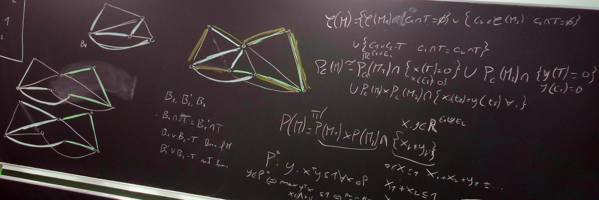

In the classical graph coloring problem, the goal is to assign colors to the vertices of a graph so that no two adjacent vertices share the same color, using the minimum number of colors. This problem has numerous applications, from scheduling and frequency assignment to sudoku puzzles.
In his celebrated paper "Paths, Trees and Flowers", Jack Edmonds gave the first polynomial-time algorithm to find a maximum matching in a graph and defined the concept itself of polynomial-time algorithm (see here for a summary). Afterwards, he solved the general weighted matching problem by studying what is now called the Edmonds' matching polytope, giving birth to polyhedral combinatorics. This is a great topic for a thesis at the interface between discrete mathematics, polyhedral optimization and theoretical computer science.
Matroids are mathematical structures that generalize the concept of independence from linear algebra to broader settings. Matroid optimization requires finding a maximum weight independent set within a matroid and can be solved via a simple greedy algorithm. Matroid intersection, on the other hand, involves finding the largest (or maximum weight) set that is independent in two matroids simultaneously. The algorithm to solve this problem is more involved: the thesis could focus on describing this algorithm and proving its correctness.
The probabilistic method is a powerful tool in combinatorics: it proves the existence of a certain combinatorial object (such as a coloring of a graph with few colors) by showing that a randomly chosen object has the desired properties with positive probability. This method is usually non-constructive: it proves that an object exists but it doesn't give a practical method to find it. There has been much work on turning these existence results into efficient randomized algorithms, one succesful example being the constructive version of the Lovász Local Lemma by Moser and Tardos.
I have been teaching Discrete Mathematics (mostly graph theory) since 2021.
The course is given in Italian.
Please check the Moodle page of the course for more information.
Thesis
If you are interested in doing a (bachelor or master) thesis under my supervision, please send me an email.
Here are some possible research topics:
Graph coloring and variations
A thesis on this topic can have an algorithmic / computational focus: study some of the fastest algorithms and heuristics to color graphs, design your own variations, and test them. These algorithms include Integer Programming approaches and evolutionary strategies such as genetic algorithms.
Another possible direction for the thesis involves choosing one of the many variations of graph coloring and studying what is known on them: for example, in non-repetitive coloring sequences of colors along any path must avoid repetition (e.g. there can be no red-blue-red-blue path). A famous result by Thue states that every path is non-repetitively 3-colorable, i.e. one can write arbitrary long non-repetitive words using only 3 letters.
Maximum weight matchings: algorithms and polyhedra
Matroid Optimization and Matroid Intersection
Another direction comes from polyhedral combinatorics: to each matroid we can associate a polytope, whose properties offer new insights and algorithmic approaches.
The Probabilistic Method
A thesis on this topic could explore the algorithmic aspects of the probabilistic method, as well as its applications to graph coloring and combinatorics.